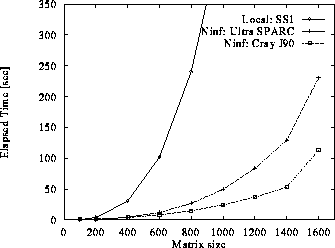

ninf_call performance
Environment
- Program
Linpack, Double, [dgefa, dgesl]
- Client Machine:
- etlhpc - SPARCStation20(60MHz, 2proc, 128MB, 100BASE-T)
- archub - SPARCStation2
- Server Machine:
- taro - UltraSPARC(143 MHz, 1proc, 96MB, 100BASE-T)
- etlj90 - Cray J90(10ns, 4 proc, 512MB, 10BASE-T)
Result
(SS20, SS2)
# SS1 -> SS2
Ninf_call Elapsed Time

Performance

Throughput